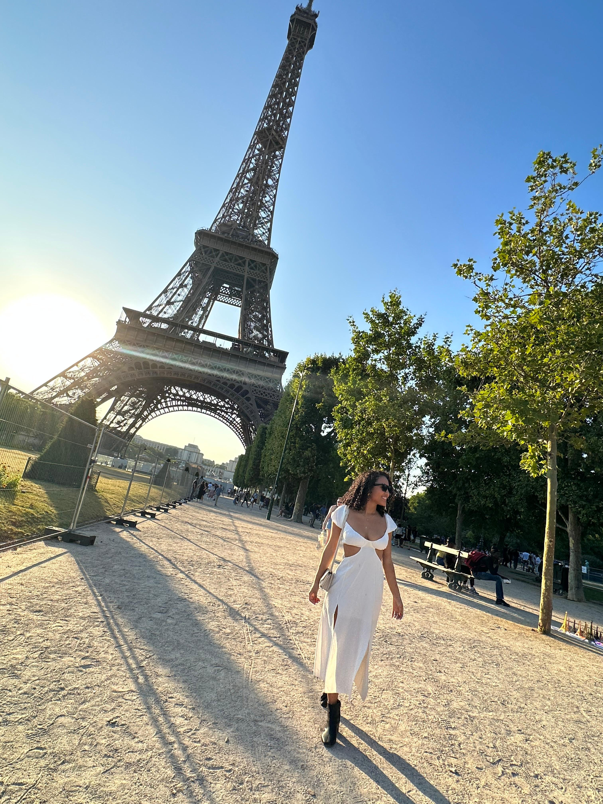

Um pouco sobre mim
Tenho 27 anos, sou capixaba da gema e nasci em Vitória, no Espírito Santo. Atualmente moro em Leiria, Portugal, mas estou passando uma temporada em Nancy, na França. Vitória é um lugar muito especial para mim. É uma cidade linda, cercada pelo mar e com uma gastronomia que vale muito a pena conhecer.
Hoje, além de descobrir novos lugares e viver experiências diferentes, também estou estudando programação e inglês. Estou em uma fase de aprender coisas novas, experimentar caminhos diferentes e descobrir até onde posso chegar.
Minha jornada na programação
Minha jornada começou um pouco antes de eu iniciar o curso de Programação do ICMC-USP, quando decidi começar a estudar por conta própria. Foi a partir daí que comecei a me dedicar cada vez mais aos estudos. Desde então, venho conciliando o curso com meus estudos individuais, aprendendo, praticando e tentando entender um pouco mais desse universo todos os dias. Ainda estou no começo, mas gosto de perceber minha evolução e, principalmente, de ver aquilo que aprendi tomando forma.
O que me faz sair da rotina
- 🐉 Ler livros de fantasia e mergulhar em mundos com dragões, bruxas e seres mágicos.
- ✈️ Viajar e descobrir novos lugares.
- 🍣 Conhecer restaurantes e experimentar novas experiências gastronômicas.
- ☕ Descobrir cafés charmosos pelo caminho.
- 🎤 Ir a shows e curtir música ao vivo.
- 🌄 Assistir ao pôr do sol.
- 🍷 Apreciar uma boa taça de vinho.
Alguns dos meus livros favoritos
Escolher apenas alguns livros favoritos é uma tarefa difícil. Mas, entre tantas histórias que já passaram pelas minhas mãos, alguns universos definitivamente ficaram comigo.
| Livro | Autor(a) | Quanto eu amei? |
|---|---|---|
| Meu Pé de Laranja Lima | José Mauro de Vasconcelos | ⭐⭐⭐⭐ |
| Corte de Asas e Ruína | Sarah J. Maas | ⭐⭐⭐⭐⭐ |
| Corte de Chamas Prateadas | Sarah J. Maas | ⭐⭐⭐⭐⭐ |
Esses são apenas alguns dos meus favoritos. Seria impossível colocar todos aqui. Provavelmente precisaríamos de uma página só para isso.
Meu mapa até aqui
Viajar é uma das coisas que mais gosto de fazer. Até agora, já tive a oportunidade de conhecer Portugal, Luxemburgo, Alemanha, Bélgica, França e Espanha. Cada lugar teve uma experiência diferente, mas existe uma viagem que ocupa um espaço especial na minha memória: Paris.

Minha viagem para Paris foi a primeira vez que entrei em um avião. Foi uma experiência tão importante para mim que acabei tatuando a Torre Eiffel como uma forma de guardar para sempre um pedacinho daquele momento. E, como toda viagem precisa de uma próxima parada, a Itália é o lugar que mais quero conhecer. Na verdade, não consigo escolher apenas uma cidade: quero conhecer a Itália inteira.